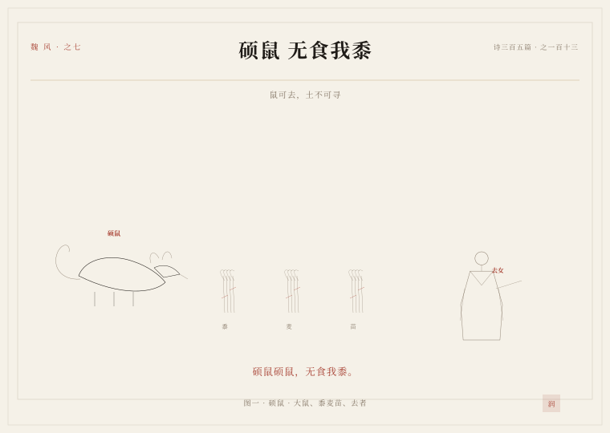
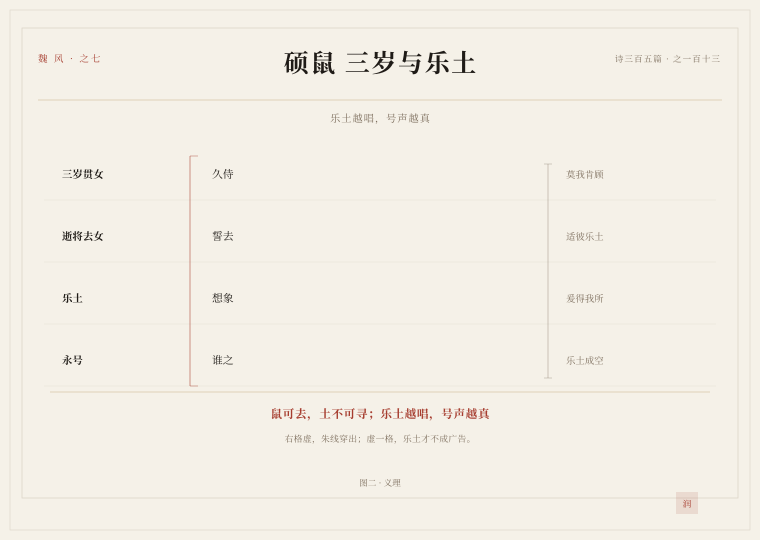

第一百十三篇 硕鼠
魏风 · 之七 SJ113
朗读 · 普通话
依经文原文朗读，章次不读出；配古琴底乐，不改速、不加拖腔。全库同一音色（豆包 TTS），非播音员录制。
一 解题
诗三判：
- 谁在说：魏国农夫。把重敛之君比作大鼠，三岁侍奉，却不肯顾、不肯德、不肯劳；誓将去汝，往乐土、乐国、乐郊。
- 说什么事：三章只换黍/麦/苗、顾/德/劳、土/国/郊、所/直/号。鼠越吃越肥，人越走越远。
- 为何编在此：112 问“无功受禄”，113
誓“去汝”。魏风终于“去”，去不是逃，是最后一句抗议。
《毛序》：“《硕鼠》，刺重敛也。国人刺其君重敛，蚕食于民，不修其政，贪而畏人，若大鼠也。”
朱子《诗集传》：“比也。硕，大也。三岁，言其久也。贯，习也。顾，念也。逝，往也。乐土，有道之国也。爰，于也。直，犹宜也。永号，长号也。”
本库的看法：《硕鼠》是一首把“去”写成“逃”的诗。
大鼠是喻，不是真鼠；黍、麦、苗是三年之食；三岁贯女，是久侍。“莫我肯顾/德/劳”三句，把“重敛”写成“不把我当人”。
“逝将去女”是誓；“适彼乐土”是想象；末句“谁之永号”把乐土拉回：乐土越唱，号声越真。
断语：鼠可去，土不可寻；乐土越唱，号声越真。
先辨五事：“硕鼠”是喻，不是真大鼠；“三岁”是多年，不是“三岁小孩”；“贯”是习、事，不是“贯穿”；“女”是汝，不是“女子”；“逝”是誓/往，不是“逝世”。
二 经文
第一章
硕鼠硕鼠，无食我黍。
三岁贯女，莫我肯顾。
逝将去女，适彼乐土。
乐土乐土，爰得我所。
第二章
硕鼠硕鼠，无食我麦。
三岁贯女，莫我肯德。
逝将去女，适彼乐国。
乐国乐国，爰得我直。
第三章
硕鼠硕鼠，无食我苗。
三岁贯女，莫我肯劳。
逝将去女，适彼乐郊。
乐郊乐郊，谁之永号。
分章：三章，章八句。
三 韵读
- 一章：鼠、黍、女、顾、女、土、土、所，鱼部；“所”收，落定。
- 二章：鼠、麦、女、德、女、国、国、直，职部；“直”收，宜也。
- 三章：鼠、苗、女、劳、女、郊、郊、号，宵部；“号”收，号声出。
读法：三章皆以“鼠—黍/麦/苗—女—顾/德/劳”推进；末章“号”一落，乐土就破。
四 字义与名物
- 硕鼠：大鼠；喻重敛之君。无食我黍：不要吃我的黍。
- 三岁：多年。贯：习、事、侍奉。女：汝，你。
- 莫我肯顾：不肯顾念我；德：施德；劳：慰劳。
- 逝：誓，一说往。去女：离开你。
- 适：往。乐土：有道之国。爰：乃、于是。所：处所。
- 直：宜、所；乐国：乐土之国；乐郊：乐土之郊。
- 永号：长号、长哭。
五 今译
大鼠啊大鼠，不要吃我的黍。多年侍奉你，你却不肯定顾念我。我誓将离开你，往那乐土。乐土啊乐土，于是得到我的处所。
大鼠啊大鼠，不要吃我的麦。多年侍奉你，你却不肯定施德于我。我誓将离开你，往那乐国。乐国啊乐国，于是得到我的宜所。
大鼠啊大鼠，不要吃我的苗。多年侍奉你，你却不肯定慰劳我。我誓将离开你，往那乐郊。乐郊啊乐郊，谁在那里长号？
六 章旨
- 一章：写“黍”与“顾”。食我黍，是夺我食；不顾，是不把我当人。
- 二章：写“麦”与“德”。食我麦，是夺我力；不德，是不肯施恩。
- 三章：写“苗”与“劳”。食我苗，是夺我生；不劳，是不肯慰劳。
- 总收：鼠可去，土不可寻；“谁之永号”一问，乐土成空。
七 诗教
- 比：以硕鼠比重敛之君；比到“无食我黍”，夺食之状自明。
- 观：观“重敛”怎样把人逼走。三岁贯女，却不顾、不德、不劳；这不是一时之贪，是长期之剥。
- 群：农夫与硕鼠相对；一在仓，一在田，食者与食于人者。
- 怨：怨在“逝将去女”；去是怨的极点，也是怨的体面。
八 分寸与边界
- 不可把“硕鼠”当真鼠。它是喻；一读真鼠，刺君就成灭鼠。
- 不可把“三岁”当三岁小孩。它是多年；一读三岁，久侍就成童工。
- 不可把“贯”当贯穿。它是习、事；一读贯穿，侍奉就成穿通。
- 不可把“女”当女子。它是汝；一读女子，全诗就成弃妇。
- 不可把“乐土”当已找到的地方。末句“谁之永号”明说未找到；一读已找到，全诗就成移民广告。
九 存疑
- 诗旨：毛序“刺重敛，贪而畏人，若大鼠”；朱子“比也”。本库从“重敛逼去”读。
- “贯”：毛传“贯，事也”；朱子“习也”。从事、习，皆通。
- “逝”：毛传“逝，往也”；一说“逝，誓也”。从誓，才见决心。
- “直”：毛传“直，得其直道”；朱子“犹宜也”。从宜所。
- “谁之永号”：一说“谁在那里长号”；一说“谁还能长号”。从前者，乐土成空。
十 跨典
- 《论语·季氏》：“丘也闻有国有家者，不患寡而患不均，不患贫而患不安。”——重敛之病；此诗“不均”之象。
- 《孟子·梁惠王上》：“庖有肥肉，厩有肥马，民有饥色，野有饿莩。”——食者与饥者；硕鼠之喻，同此一刺。
- 《左传·昭公三年》：“民闻公命，如逃寇仇。”——民去之象；“逝将去女”正是此句的诗。
- 《诗经·魏风·伐檀》：“彼君子兮，不素餐兮。”——112
问，113 去；魏风七篇，终于“去”。
十一 双卡与图
双卡八对：
| 硕鼠（喻） |
硕鼠（真鼠） |
| 三岁（多年） |
三岁（三岁小孩） |
| 贯（习、事） |
贯（贯穿） |
| 女（汝） |
女（女子） |
| 逝（誓/往） |
逝（逝世） |
| 乐土（有道之国） |
乐土（已找到的地方） |
| 直（宜所） |
直（直道） |
| 永号（长号） |
永号（永远号叫） |

图一 · 硕鼠 大鼠、黍麦苗、去者

图二 · 硕鼠 三岁与乐土
读图三处：
- 大鼠：图一只画背、尖耳、长尾、齿痕，不画全鼠、不画脸；鼠是喻，画全就成真鼠。
- 黍麦苗：三束并列，鼠齿痕在束上；食痕比鼠牙更狠。
- “乐土”在右：图二右“乐土”一格虚，末句“永号”一朱线穿出；虚一格，乐土才不成广告。